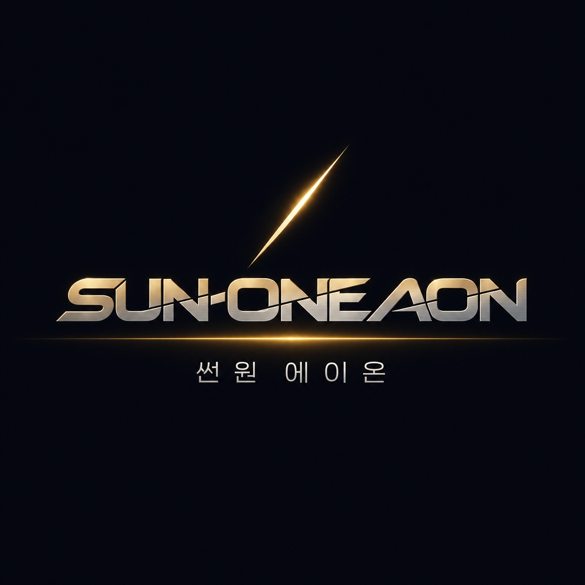
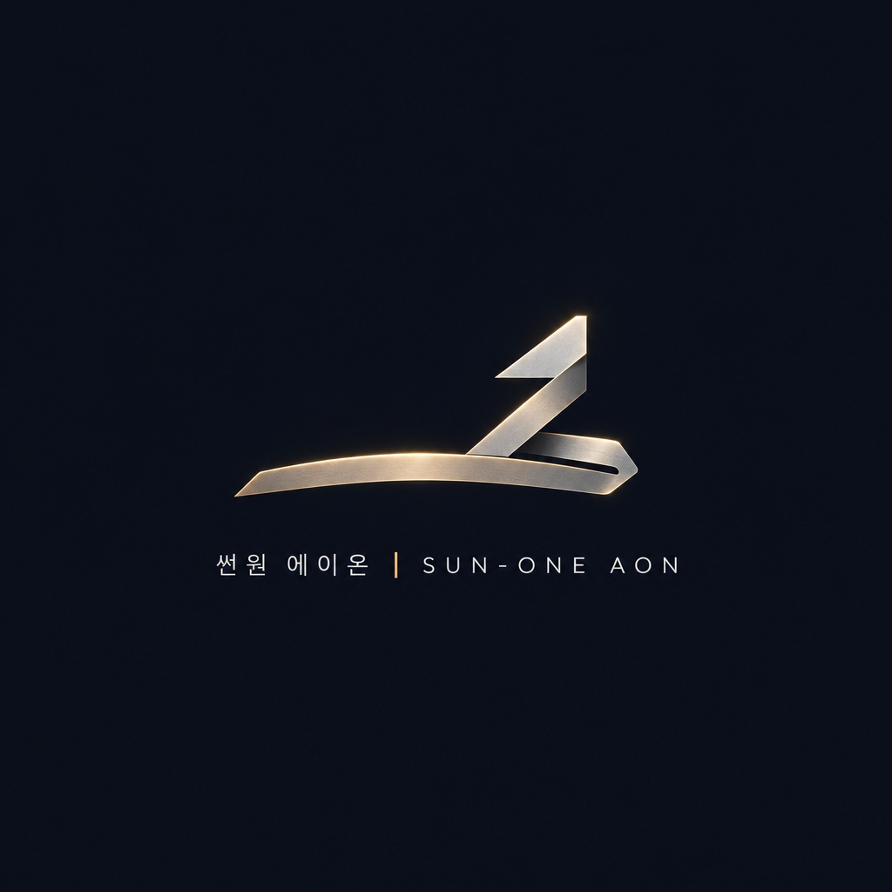

SUN-ONE AON
S1 만능소통창 · 8대 코어 연결됨
��️ 8대코어
�� 앱 설치
Core 1 킬스위치
Core 2 UUID원장
Core 3 48kHz마스터
Core 4 시네마틱루프
Core 5 SHA256감사
Core 6 옴니채널배급
Core 7 성과·IP확장
Core 8 퀀트·환원

SUN-ONE AON · 썬원 에이온
온 세상에 본연의 밝음을 되찾아주는 환원(還元)의 시작점.
어느 브라우저·스마트폰에서든 하나로 연결되는 만능소통창입니다.
��️ 삼성 회의 현황
⚡ 8대 코어 상태
�� Suno v6 명작 작업
��️ 킬스위치 점검
��
전송